We are surrounded by all types of materials. However, these materials, rather than being pure homogeneous substances, most of them are heterogeneous materials possessing phases of different materials or the same materials but different phases of states. Heterogeneous materials are non-uniform and can be discerned. Lithium-ion battery is a perfect example for heterogeneous material. The overall properties of the material are not just controlled by its chemical composition, but by numerous details of its hierarchical internal structures spanning from the nano-scale to the macro-scale. Insufficiency of chemical composition for evaluation of physical properties of interests is due to existence of randomness in all materials at some scale-level. Hence multi-scale design of optimized material is the concern of many recent researches.
In the study, we used Finite Element Analysis to find power density of designed LIB, analyzed the data and find the heterogeneous grain structure of LIB and finally used Matlab to recreate the grain structure and plot the correlation function.
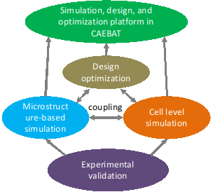Fig.1 Overall strategy for developing the computational tools based on existing CAEBAT
Characterization: A random two-phase microstructure medium can be regarded as a probability space that can be characterized with statistical approaches. Many descriptors have been proposed for quantification of heterogeneous microstructure. One of the basic tool for characterization of a heterogeneous micro-structure is the n-point correlation functions. And in the case of our study, we are using the two-point-correlation function, which is also the most widely used on among all the n-point-correlation functions. The two-point correlation function is function about the probability of two existing interested points within particular distance.
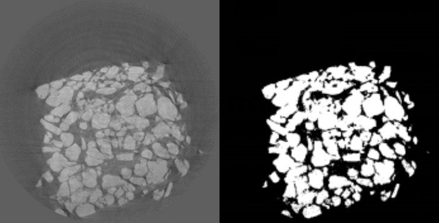
Fig.2 ScannedImage of Lithium-Ion-BatteryFigure 1.2 2D Binary Image of Lithium-Ion-Battery
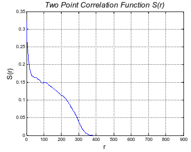Fig.3 Two-point Correlation Function of the LIB
In order to make further analysis more approachable, it is important to transfer the image into binary.We crop the image to get rid of the outer boundaries which are useless for the study and characterization. In this example, we chose the image with more regular boundaries which could be more easily reconstructed. When the image is ready for characterization, the 2 point correlation functions could be applied.
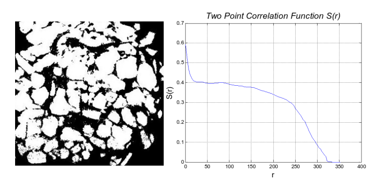Fig.4 Simplified Image of the Binary LIB ImageFigure (left), Two-point correlation Function S(r) of the Simplified Image (right)
Reconstruction: After finishing the reconstruction, generally there are two ways to test and analysis the model: Geometrical Analysis and Functional Analysis. The geometrical analysis result is shown below in two different aspects:
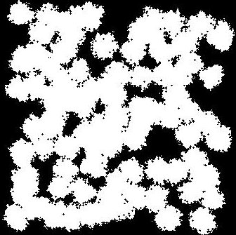Fig.5 2D Reconstructed binary LIB Image
Optimization: The reconstruction of the material is based on the image properties and two-point correlation function. For the basic image property, the ratio of each phase, the number of ‘grains’ and the size of the ‘grain’ need to be find out. The reconstruction process combine a random core selection process and a random grain filled process. In the process of core selection, the core are randomly distributed in the whole image with two criterion: the critical criterion and the grain potential energy criterion. The critical criterion is that there exists an minimum distance between two different cores, while the grain potential energy criterion is that based on the grain potential function, the new grain core are more likely to developed near the existing grain. The process of grain grow simulates the real process of a growing grain by using the random function. With typically probability of grows, for each generation, each pixel’s generation follows the same probability.
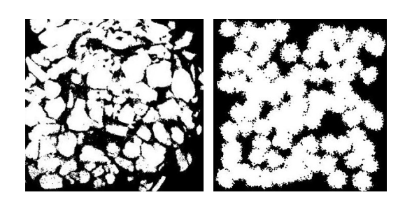Fig.6 Comparison between the scanned model (left) and simulated model (right)
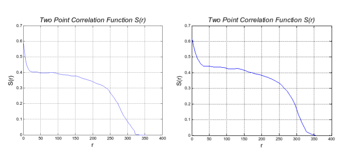Fig.6 Two-point correlation function comparison between scanned model (left) and simulated model (right)
Characterization: Similar as 2D reconstruction, 3D reconstruction[6] aims to simulate a more realistic model of the heterogeneous material of Lithium-Ion-Battery, for a further research. To characterize a 3D model, there are two ways: 3D rough view and 2D sectional view. For both methods, the two-point correlation function still works. Compared to the 3D rough view, the 2D sectional view is better in showing the inner structure of a heterogeneous grain.
Reconstruction: Similar as 2D construction, the construction processes are the same in 3D construction.
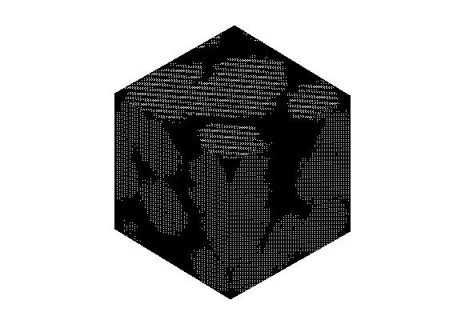
Fig.7 3D rough view of reconstruction grain
Figure above is an example of 3D construction. The length of the grain is 100, with 20 grain cores. The probability of grows is 50%, and the critical radius is 0.07. The number of generations is 40 in this image.
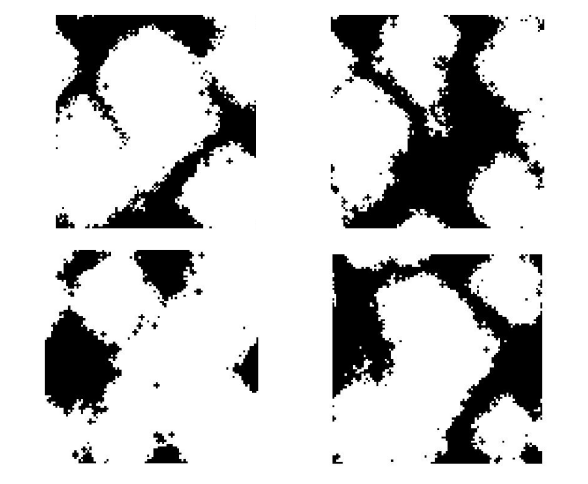Fig.8 2D sectional view of the reconstruction grain (d=5, 25, 65, 95)
Analysis & Optimization: The geometrical analysis of the reconstruction grains is similar to 2D: the shape of function and the two-point correlation function. However, the two-point correlation function is time costing, which will cost a huge in further researches. So the simplified two-point correlation function is useful here.
The simplified two-point correlation function model bases on the original two-point correlation function, which has been talked in the previous chapter. There are two more variables imported to control the size and accuracy.
The size factor controls the sampling size (using grid distribution), the value is between 1 and the maximum length. The accuracy factor control the minimum searching steps, the value is between 0 and 1. When the size factor equals to 1 and the accuracy factor equals to 0, the simplified two-point correlation function is exactly the same as the original one.
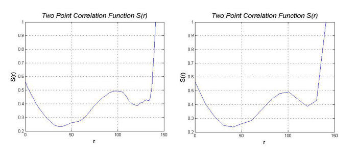Fig.9 Two-point Correlation Function with different size factor (original / size=10)
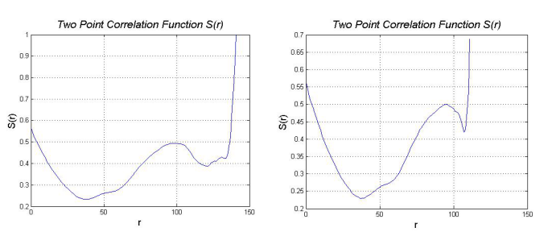Fig.10 Two-point Correlation Function with different accuracy factor (original / accuracy=0.1)
Zhu’s recent numerical simulation efforts have been focused on investigating the variation of local physical and electrochemical properties in a realistic 3D microstructure of a LIB cathode electrode during galvanostatic discharge processes[12, 13]. A cathode electrode (LiCoO2) of a commercial LIB has been scanned using a synchrotron nano-CT at the Advanced Photon Source (APS) at Argonne National Laboratory (ANL). A raw projection data corresponding to a 58 nm pixel dimension is shown In Fig. 5a.
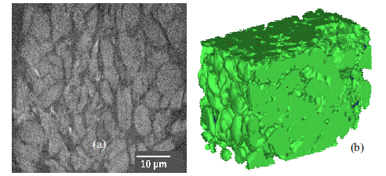Fig.11 Morphology images of LiCoO2 cathode from a commercial LIB: (a) Nano-CTimage, (b) Reconstructed cathode active material particles.
ZThe reconstructed microstructure is shown in Fig. 5b. In this work, a C++ code was developed to rebuild the microstructure of the semi-cell based on the scanned 2D images and resolvethe 3D coupled governing equations using finite volume method, as shown in Fig. 6. The galvanostatic discharge process of a semi-cell was simulated and discharge curves at different discharge rates are shown in Fig. 7. In order to compare with the P2D model, the discharge performance was simulated based on the P2D model and the corresponding averaged transport properties. As shown in Fig. 7, the P2D model shows better performance than the 3D model at the 5 C and 10 C discharge rates because the structure inhomogeneity, which is taken into account with the 3D model, will cause more performance drop at large discharge rates[1, 14]. Moreover, the 3D model can also provide valuable insight into the spatial distribution of a variety of variable fields in the cell. Fig. 8 shows the distributions of Li ion concentration in cathode particles and electrolytes and the intercalation reaction rate with the 5 C discharge rate at 600 sec.
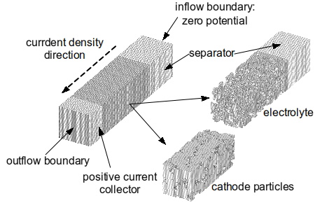Fig.12 Semi-cell and mesh generation for both the electrode and the electrolyte.
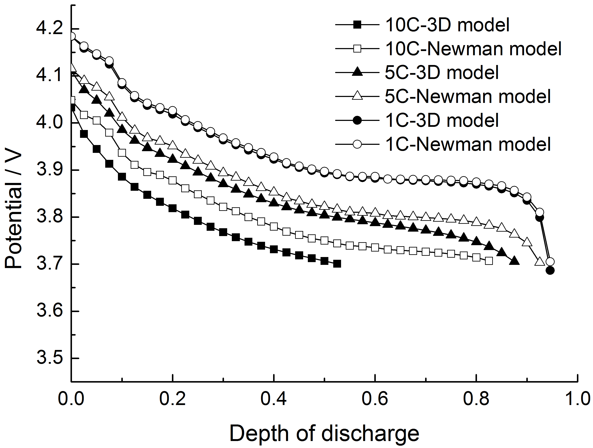Fig.13 Normalized discharge of microstructure model and corresponding P2D model at different discharge rates.